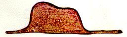

| A LÉON WERTH
Pido perdón a los niños por haber dedicado este libro a una persona mayor. Tengo una excusa seria: esta persona mayor es el mejor amigo que tengo en el mundo. Tengo otra excusa: esta persona mayor puede entender todo, hasta los libros para niños. Tengo una tercera excusa: esta persona mayor vive en Francia, donde pasa hambre y frío. Tiene mucha necesidad de ser consolada. Si todas estas excusas no son suficientes, quiero dedicar este libro al niño que este señor ha sido. Todas las personas mayores fueron primero niños. (Pero pocas lo recuerdan). Corrijo entonces mi dedicatoria: A LÉON WERTH |
PRIMER CAPÍTULO

En el libro decía: "Las serpientes boas tragan a su presa entera, sin masticarla. Luego no pueden moverse más y duermen durante los seis meses de su digestión".
Reflexioné mucho sobre las aventuras de la jungla y, por mi parte, logré trazar con un lápiz de color mi primer dibujo. Mi dibujo número 1. Era así: 
Mostré mi obra maestra a las personas mayores y les pregunté si mi dibujo les daba miedo.
Me contestaron: "Por qué un sombrero podría dar miedo?"
Mi dibujo no representaba un sombrero. Representaba una
serpiente boa
que digería un elefante. Dibujé entonces el interior de la
serpiente boa, para que las personas mayores pudieran comprender.
Siempre
necesitan explicaciones. Mi dibujo número 2 era así:
Las personas mayores me aconsejaron dejar de lado los dibujos de serpientes boas abiertas o cerradas, e interesarme en cambio en geografía, historia, matemática y gramática. Es así como abandoné, a la edad de seis años, una magnífica carrera de pintor. Había sido desalentado por el fracaso de mi dibujo número 1 y de mi dibujo número 2. Las personas mayores no entienden nunca nada por sí mismas, y es cansador, para los niños, darles una y otra vez explicaciones.
Tuve entonces que elegir otro oficio y aprendí a pilotear aviones. Volé por todo el mundo. Y la geografía, efectivamente, me sirvió mucho. Sabía distinguir, del primer vistazo, China de Arizona. Es muy útil, si uno está perdido durante la noche.
Tuve así, en el curso de mi vida, montones de contactos con montones de gente seria. Conviví mucho con las personas mayores. Las vi de muy cerca. Mi opinión no mejoró demasiado por ello.
Cuando encontraba una que me parecía algo lúcida, probaba con ella mi dibujo n° 1 que siempre he conservado. Quería saber si era realmente comprensiva. Pero siempre me respondía: "Es un sombrero". Entonces no le hablaba ni de serpientes boa, ni de selvas vírgenes, ni de estrellas. Me ponía a su alcance. Le hablaba de bridge, de golf, de política y de corbatas. Y la persona mayor estaba muy contenta de conocer un hombre tan razonable.
| Commencement | |
Índice |
| Chapitre II | Capítulo II |